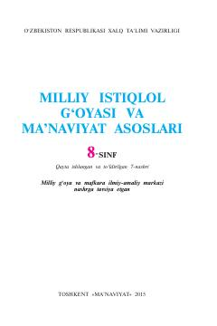

MI8-sinf o'quvchilari uchun milliy istiqlol g'oyasi va ma'naviyat asoslari darsligi.
Mazkur darslik umumiy o'rta ta'lim maktablarining 8-sinf o'quvchilari uchun mo'ljallangan bo'lib, milliy istiqlol g'oyasi va ma'naviyat asoslarini yoritadi. Unda jamiyat taraqqiyoti, bunyodkorlik, huquqiy demokratik davlat va fuqarolik jamiyati tushunchalari zamonaviy metodik talablar asosida tushuntirilgan. Kitob yoshlarda milliy o'zlikni anglash va ezgu fazilatlarni shaklartirishga xizmat qiladi.